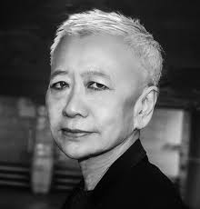

that is what artist Shu Lea Cheang asked in her work Garlic=Rich air asks

- 1954 Taiwan
- National Taiwan University, New York University
-nominated for Best Feature Film in the Teddy Awards
- most recent work was Fluidø wich Cheang wrote and directed